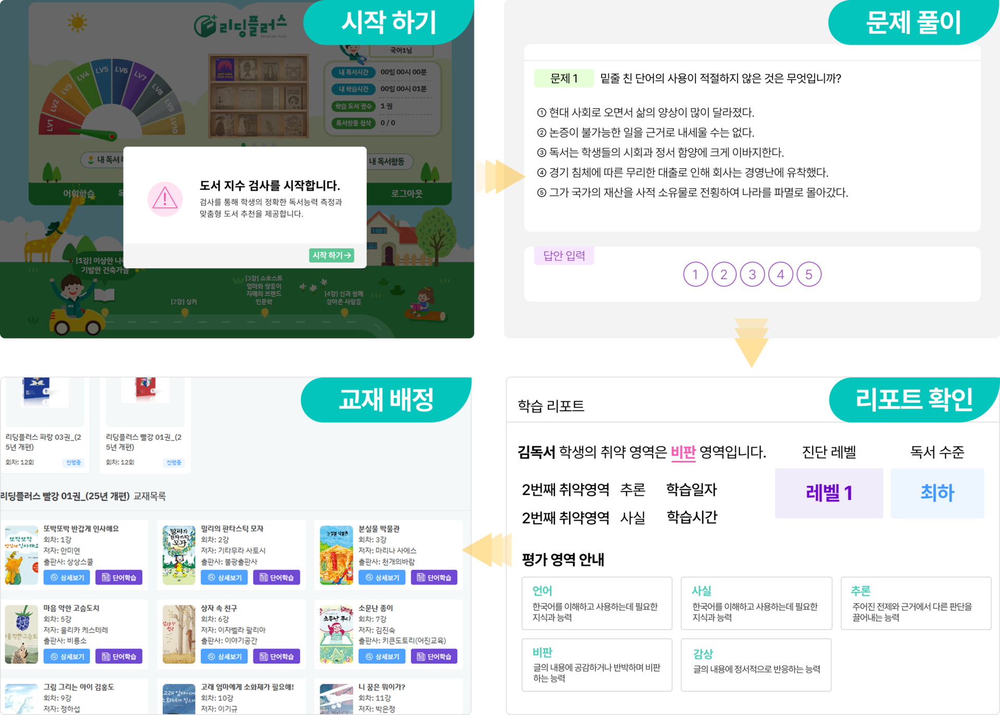
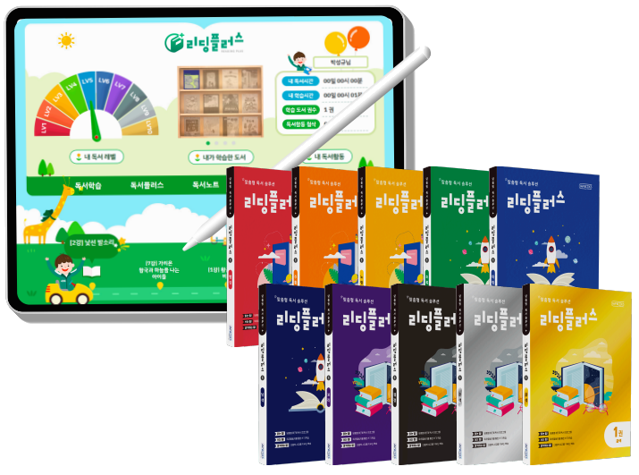
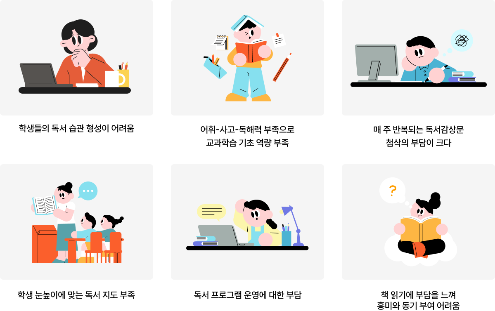
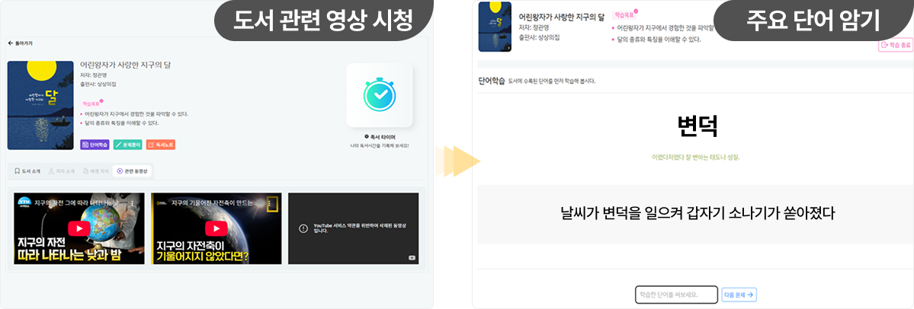
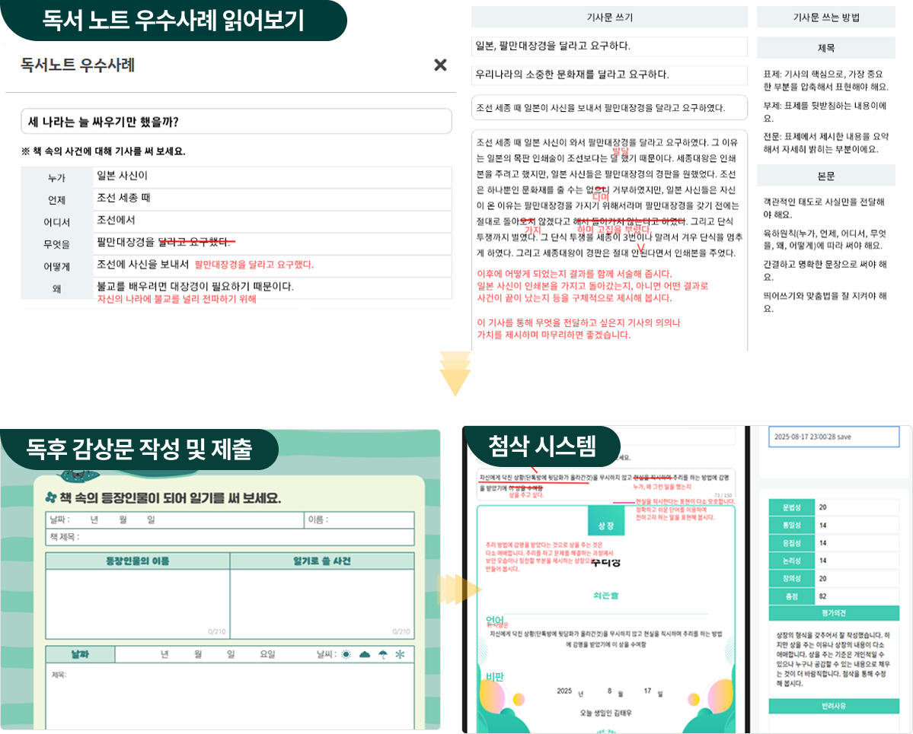
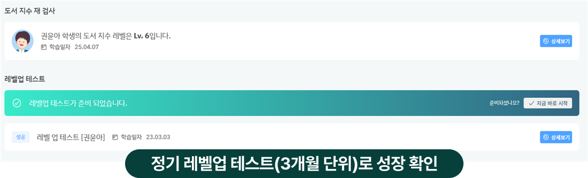
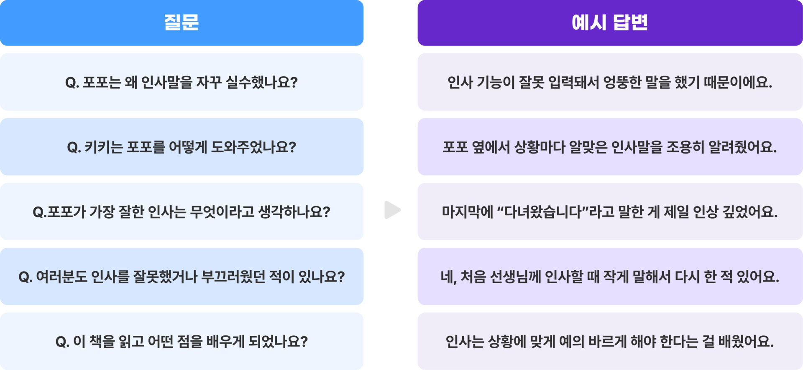

1학생 수준 진단 및 맞춤 커리큘럼 설계
초1~고1 도서지수 검사를 통해 학생별 독해 수준을 분석하고, 수준에 맞는 학습 커리큘럼을 제공합니다.

읽는 습관과 생각하는 힘, 두 날개를 키워주는 초·중등 독서 프로그램

학생별 학습 격차와 독해 역량 부족은 수업 운영의 어려움으로 이어집니다.

학생 수준 진단부터 교재 배정, 첨삭과 레벨 성장 확인까지 한 흐름으로 운영합니다.
초1~고1 도서지수 검사를 통해 학생별 독해 수준을 분석하고, 수준에 맞는 학습 커리큘럼을 제공합니다.

사전 어휘와 내용 파악으로 독서 집중력을 높입니다.

다양한 감상문과 글쓰기로 사고력을 키웁니다.

정기 레벨업 테스트를 통해 3개월 단위의 성장을 확인합니다.

책의 주제를 바탕으로 사고를 확장하는 대화 활동입니다.

AI리딩플러스, 독서습관과 학습력을 동시에 키우는 특별한 방법
